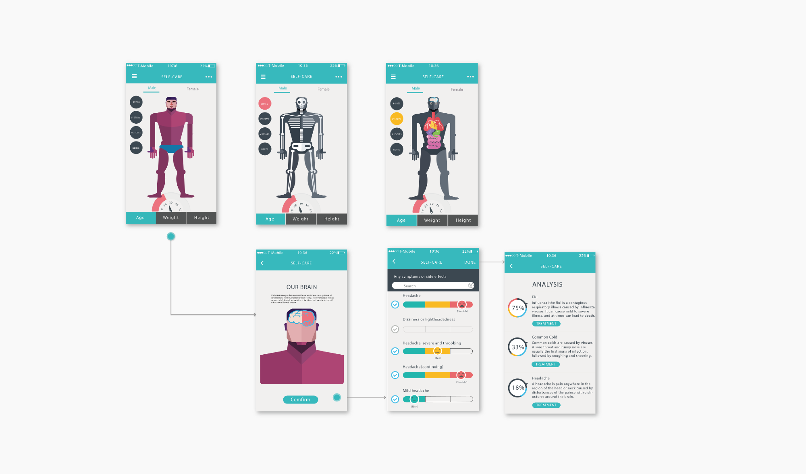

GRADUATE THEIS PROJECT (WIP)
EVENTBRITE: EVENTS SEARCH
HISMART: WORKED EXTEND WITH YOUR PHONE

TINDEX:PASSION PROJECT(WIP)
MOBILE APP: FRESH TRACHER
ANIMATED ICON SETS: MIMAI
MOBILE APP:LIME LIFE
MOBILE APP:SALF-CARE
DESIGN PROPOSAL: FLSHLAB
BACK TO WORK

Pocket Mission: Start your day with a mission
Graduate Thesis Project | Working in progress
Project Goals
There are plenty of habits form mobile applications outside there, however I found lots of them lack of the balance between simplicity and versatility and can’t provide a good solution to help people form habits. With a lot of case studies, market research and user interviews. I want to create a lightweight product that providing better solutions to help people form healthy habits in an easy and fun way.
Solutions & Process
Therefore, based on early stage research & iteration report I made some milestone key features for my app so far: The app will offer users plenty of pre-set small and attainable healthy challenges to make sure people can make the first step easily and find inspirations in the long run
2.0 Wireframe
Interation Exploration
Result & Next step
In the next step, I will start explore more possibility of interesting and reasonable interactive experience. Origami and Framer.js are two main tools I will use.
In the meantime, I will do the 2nd user testing for my simply Invision prototype to see how user engage with the app and whether they are easy to use and keep doing interations based on testing results
Eventbrite: Events browse design
Last summer, I worked at Eventbrite as a product design intern working on the events discovery and search team. One of the important project is to find a solution offer a compelling browse experience for consumers who are interested in finding events.
Problems:
Eventbrite has been using the directory pages as a stop-gap solution to surface events within a given category by using search results pages with an empty query and category filters. However, this approach has several major flaws:
Browse mindset is different from the search mindset. Users earlier in the event discovery funnel are looking for more guidance and inspiration. Hence, just presented with search results, they are less likely to engage with the content and are more likely to bounce off the site.
Design Solution:
After long research and several iterations we decided add a gallery view to improve the browse experience and add large organizers profile cards on search result page to improve search experience.
Adding a browse functionality will empower user to discover, explore new live experiences, and encourages exploration through engaging content. The new gallery view experience leverages event cards, reduces white space at the top. Users have the option to toggle between gallery view and list view depending on their needs.
Desktop Demo ( gallery view for events browse & Listview for events search)
Result & Next step
Thanks to my mentor, I got the chance worked closed to all team members and delivery all final design across serval platforms after 5 weeks iterations.
I’m excited to see that the MVP of new browse design has been launched early September. The next step will be refine user experience to increase engagement. Implement more aligned list view.

Hismart: The bag work that extends with your smartphone.
Indiegogo campaign project UX/UI Design | Spring 2015
Story & Role:
At the beginning of the 2015, I got a chance to work for Lepowglobe.Inc as the the first digital mobile product designer for their Indiegogo campaign project — A high quality and well designed bag which working with a app. The project went through 5 mouth before we put it on the Indiegogo, I worked and collaborated with a lot of people in the team to create this bag from drafting sketches, to sewing prototypes, to engineering the HiSmart controller and dedicated ourselves to provide valuable features to make the life of the urban explorer more efficient and enjoyable.
HiSmart Official Website
Design Process: Sketch

Pin and Share Locations
Forget about jotting down the location of that one cafe you stumbled upon last week or trying to remember where you parked your car. With HiSmart you can just pin them.
Never forget your bag
It reminds you if you have lost your bag or cellphone and will help you look for it
Result: We Got $297,405 fund raised on indegogo
Hismart was the longest project I ever worked and I've learned a lot through all stages and interdisciplinary research with other people. Luckly, we ended up got $297,405 fund raised on Indegogo.
The first batch of bag has been shipped to consumers in the October and the MVP of hisamrt app has been launched as well. O(∩_∩)O~~
Tindex: Where does my time go? (WIP)
Passion Project | Working in Progress
Initial Ideas | what’s the value ?
I came up this idea when I simply found there are dozens of app on the App Store help people recording how they spend their money but few apps to help people figure out how we spend all our time. It’s worth to design a beautiful and lightweight product to help people figure out how they spend their time and make some important decisions in their life. After all, “ Time is Galleon—Harry Pottery ” :P
Think process & Product Definition
After a few user interview, Market research and with myself as a user person, I narrow the target audience group and make define this product as a simple time recording tool to help tracking users time usage in the very easy way with friendly user experience.
Tindex's primary demographic is working students or people who have just entered the workforce. They need a product like Tindex to help them to stop setting unattainable goals and to start using their time more wisely. But, It can also be used as a product to quickly test the amount of time it will actually take to complete a specific task.
Target Audience Analysis
Feature High light
Next Step
Contiune interation and explore the best way for people to study their time usage easily and clearly.
Frashtraker: Explore your nearby farmers' market
Project Goal:
Farmers market has always been very popular in the U.S. But there is no app outside there to help user to track down the information that they need. The aim of this project is focus on information enhancement which help users to get reliable and accurate information and guides user to the nearest farmers market.
Design Process:
It’s always been hard to define an ending moment for a side project, and as much as I want to see the final version of the design I also enjoy every step of the design process, and I reminded myself 3 things constantly through the journey, It should be designed to reach the project goal in the best way, easy to use and well crafted.
Simplified the Information Architecture
Two Task have been illustrated showing both a schematic walkthrough and the actual screens the user will navigate through to reach his or her goals
Wireframe
Final Design

Animated icon sets: Hoilday in Mimai
GIF Design | Summer 2015
Story
I've always been fascinated with gifs and emojis for a long time. They always bring people enjoyable and fun experience. Last summer I created an animated icon sets during the vacation in Miami. I was inspired by all of the outdoor activities and games and had a lot fun experimenting with color and movements. Miami is cool!
Limelife: Booking a fitness class nearby
Internship Work | Summer 2014
Project Overview
Summer 2014 I was worked at a startup company in Shanghai as product design intern for 12 weeks. I worked in consumer growth team in both UX and UI area to help them build their earlier version product. Lime life is a mobile based program that can reached through any internet device. The program provides services for all lime life gyms in China. It help users book and pay the classes. And also, It allows multi user access so both users, and trainers can work collaboratively together.
Target Audience Analysis ( one group )
Wireframe
Final Design
Selfcare: Trusted Health and wellness information
Story
Self-care is the very first long-term mobile app project I built in school. I built this project with one of my friends Tongzhang. We went to the same college for BA and shared same design interest. We thought the existing medical products in the market is all bring us very serious and cold feelings, so we decide to create more bright and colorful product with unique features to help people get more information when they doesn't feel well.
Features High light
This application allows customers to easily obtain a diagnosis by tapping on the position of the body map and symptoms report. Let's users get more information about their illness. It will also give user treatment advise. Such as home remedies, medication recommendations, and scheduling an appointment with a nearby physician. Three main tasks have been showing both the schematic walking through and app screen user navigate through reach his or her goal.
Walkthrough
Three main tasks have been showing both the schematic walking through and app screen user will navigate through reach his or her goal.
Result & Next step
We spend 2 monthes on this project and ended up by finished the clickable prototype and won the best UX project in the 2014 spring showI think that’s the time I fall in love with design process and team work :)
Fashlab: E-Commerce web design proposal
UX Research | Spring 2014
Project Overview
FashLab is a new start-up business dedicated to designing, selling, and celebrating the fusion of graphics and fashion. It also serves as an online community that unites designers and fashion conscious people. This project was designed to give FashLab an exceptional user experience with a sophisticated interface, intuitive navigation and scalable solutions for all devices and platforms.
View Proposal
This was a group project where 2 classmates and myself finished the proposal in 2 months